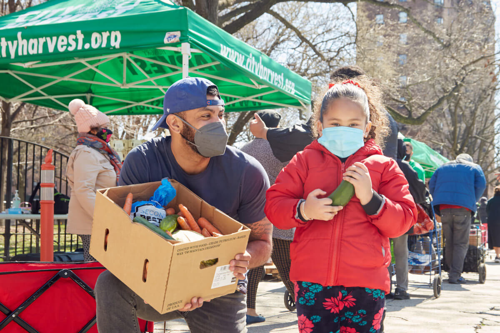
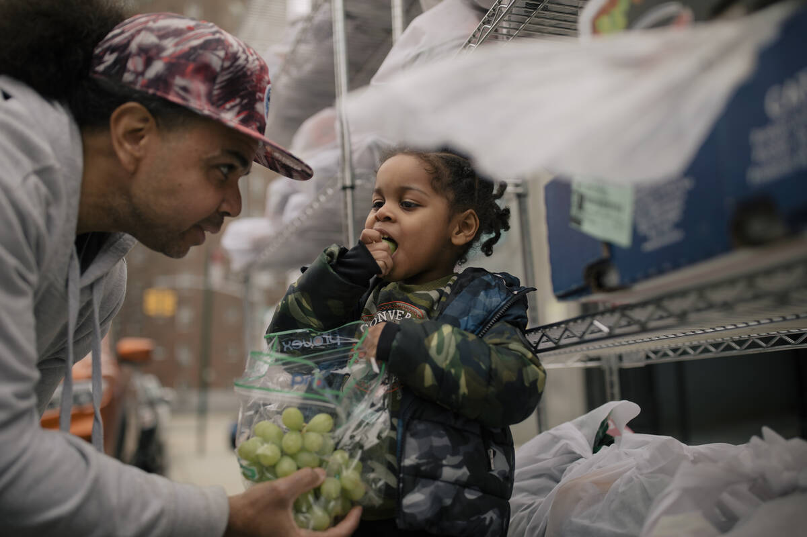

Welcome to NYHO: New York Hunger Organization, a compassionate initiative dedicated to combating hunger and improving food security across the diverse communities of New York. At NYHO, we firmly believe that no individual should go to bed hungry, and we are committed to creating a hunger-free city by providing vital support and resources to those in need.
NYHO serves as a central hub for addressing the multifaceted issue of hunger in New York. Our website serves as a gateway to a wide range of programs, services, and resources aimed at tackling food insecurity. Whether you are an individual seeking assistance, a volunteer looking to make a difference, or a supporter interested in learning more, NYHO offers a wealth of information and opportunities to get involved.
Through strategic partnerships with local food banks, community organizations, and generous donors, NYHO distributes nutritious meals, food packages, and fresh produce to individuals and families facing hunger. Our network of dedicated volunteers works tirelessly to collect, sort, and distribute food items, ensuring that those most in need have access to nourishing meals.
NYHO also places a strong emphasis on education and empowerment. Our website features valuable resources on nutrition, meal planning, and budgeting, equipping individuals with the knowledge and skills necessary to make healthy food choices and stretch their resources. Additionally, we collaborate with community organizations to offer workshops, training sessions, and advocacy programs that address the root causes of hunger and promote long-term solutions.
